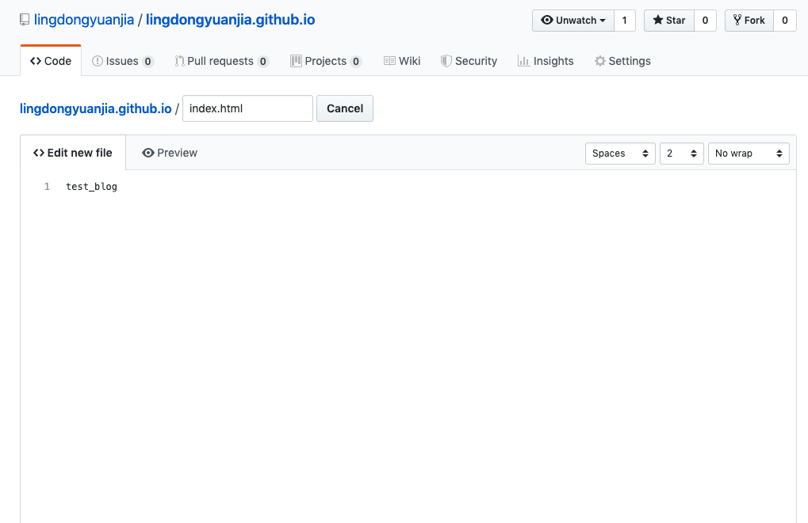
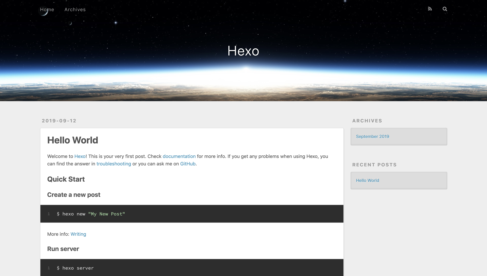
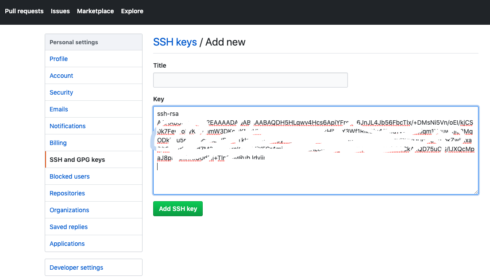
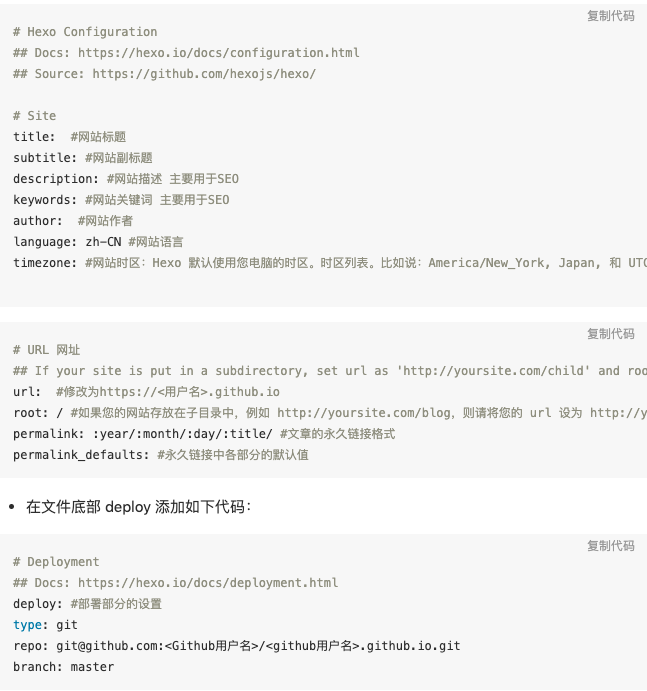

最近打算看一些框架的源码，但是在正式看之前，突然觉得缺少一个保存和记录的平台，虽然平时也会在掘金、有道云写一些收获，但是觉得还是有点太分散了，所以，想了想，还是自己搞个博客好了。
说干就干，在网上搜了一波，发现可以借用github和hexo搭建自己的博客，以下是搭建时的一些操作。主要参照了掘金上的一篇文章，文末会给大家推荐一下，该文章写的很详细，良心之作。
github准备
1.打开github:https://github.com/,注册账号
2.创建blog的仓库,如图所示：
3.新建一个文件,测试能够访问成功

4.打开浏览器访问github page:https://lingdongyuanjia.github.io/
hexo博客本地环境安装
1.安装node
2.安装git
3.全局安装hexo: npm install -g hexo-cli
4.初始化hexo目录:hexo init test_blog
5.进入目录: cd blog
6.安装依赖:npm install
7.清除浏览器缓存:hexo clean
8.生成静态页面:hexo g
9.本地运行:hexo s,端口号默认是4000，如果端口号被占用，可以使用:hexo s –port 6666 切换端口
10.浏览器中打开(localhost:4000)或者(127.0.0.1:4000),说明Hexo博客已经成功在本地运行,如图所示：

本地博客发布到github
1.安装将hexo部署到git的插件,在test_blog目录下安装插件:npm install hexo-deployer-git –save
2.将本地目录与github关联起来
ssh-keygen -t rsa -C “你的git邮箱地址”
3.打开.ssh文件夹，将id_rsa.pub拷贝到git下的Setting -> SSH and GPG keys下
4.添加New SSH key将之前复制的内容粘贴到key的框里，任意title,完成添加

5.进入test_blog目录下，找到_config.yml博客的配置文件,更改url和deploy下的repo

6.保存配置，将本地页面上传至:hexo g -d
修改hexo主题及其他配置
1._config.yml是博客的配置文件;themes/主题名/_config.yml是主题配置文件
2.hexo选题选择：https://hexo.io/themes/
3.选择某一主题后，拷贝该主题的的git地址；进入test_blog的theme目录下，安装主题:git clone https://github.com/klugjo/hexo-theme-clean-blog.git
4.安装完后，进入博客的配置文件，即test_blog/_config.yml，将theme改为该主题名，清除缓存重新启动
5.如需要更改主题内容，进入themes/hexo-theme-next/_config.yml进行修改
编写markdown文章
1.创建文章
hexo new “文章标题”:此时会在source/_post文件夹中创建一个文件，该文件就是要发布的原始文件
2.模版设置
当我们使用命令 hexo new “title” 去创建我们的文章时，hexo会根据/scaffolds/post.md文件对新建文件进行初始化，换言之，/scaffolds/post.md文件就是创建新文章的模板，所以我们可以修改它来适应自己的写作习惯
插入图片的操作
1.根目录的_config.yml 里的post_asset_folder:这个选项设置为true;
2.安装插件:npm install https://github.com/CodeFalling/hexo-asset-image --save;
3.完成安装后用hexo新建文章 hexo new "blog" 的时候会发现_posts目录下面会多出一个和文章名字一样的文件夹。
4.只要使用就可以插入图片。其中[]里面不写文字则没有图片标题。踩到的坑
1.在添加图片时，在.md的文件中习惯性空2格，其他也就是相当于在code中插入内容了，这样无论如何也显示不出来，所以各位老铁在插入图片时，要注意
推荐
参考文章：https://juejin.im/post/5caddd1ff265da035e210dce#heading-67
hexo主题：https://hexo.io/themes/
next文档：https://theme-next.iissnan.com/